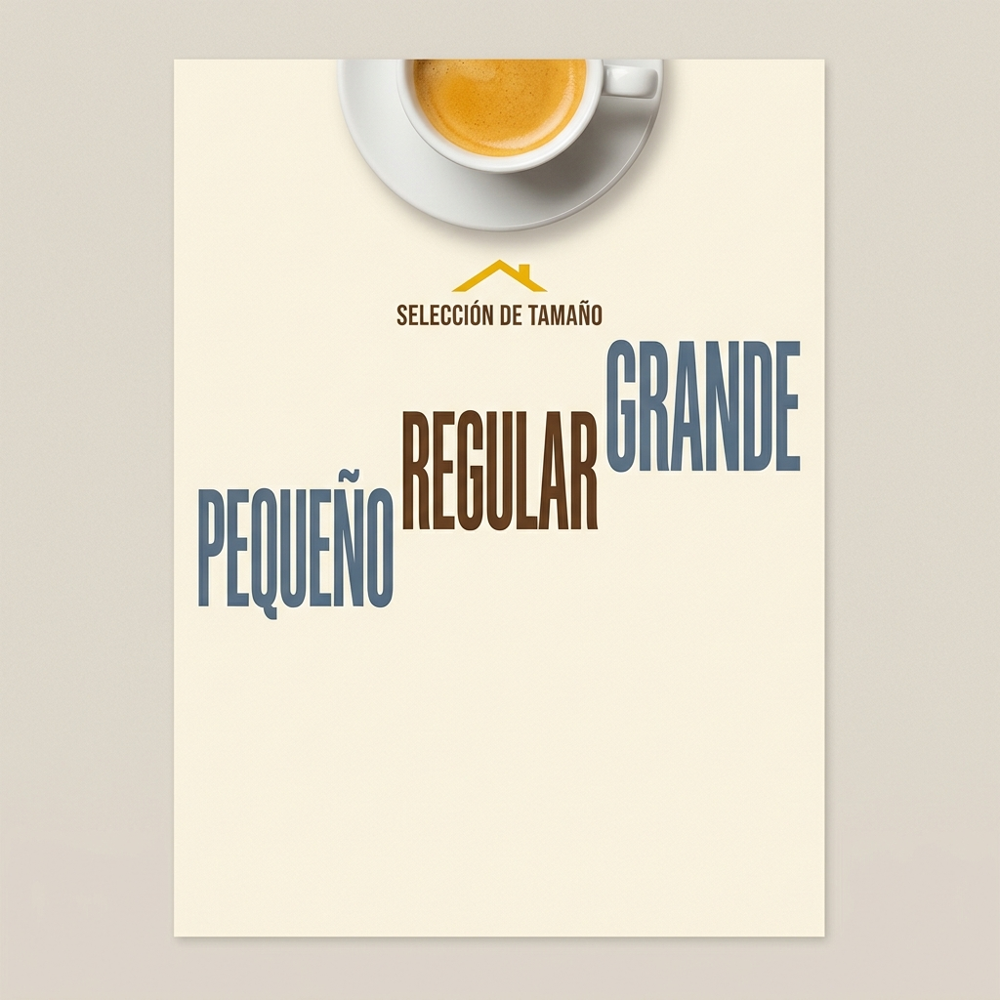
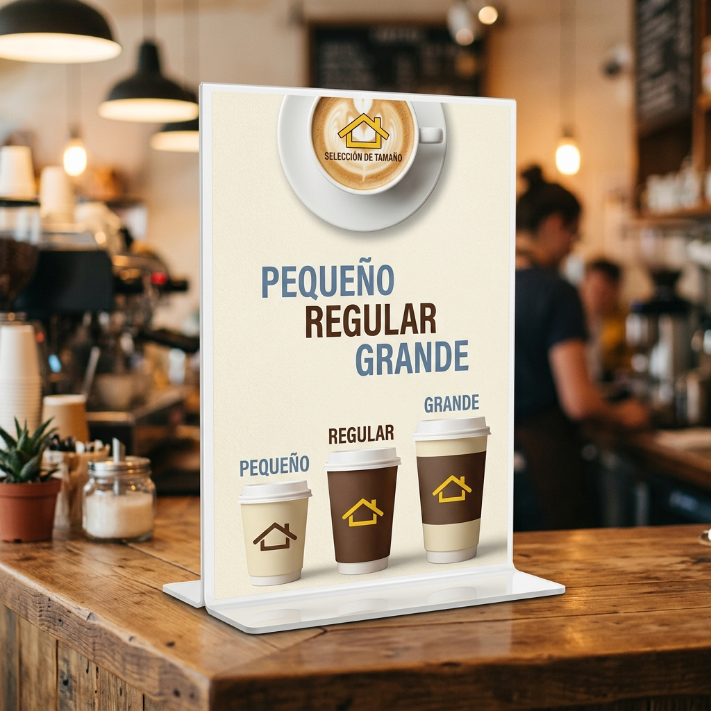

SELECCIÓN DE TAMAÑO
☕ Estilo: Cozy Modern Space
Inspirado en la tipografía condensada y la composición limpia de cafeterías contemporáneas. Sin círculos ni elementos distractores, la tipografía pura en escala escalonada guía al cliente.

Claves del Nuevo Diseño:
- Tipografía de la Foto: Letras gruesas, condensadas y en caja alta para un look editorial sumamente moderno.
- Estructura Escalonada: Las palabras están dispuestas en escalera (izquierda, centro, derecha) simulando peldaños.
- Fórmula de Color: Azul grisáceo apagado y marrón espresso cálido sobre un fondo crema limpio.
- Sin Círculos: Toda la información de tamaño se expresa únicamente mediante la escala de la tipografía.
Especificación Canvas
2700x3600px (9x12" 300 DPI)
Logotipo y Tipografía
Logo Amarillo y Tipografías Condensadas
Muestras de Color
Azul Grisáceo y Espresso Tinto
Fondo Papel Crema
Flux / NanoBanana 2
Capa de Ruido Orgánico
Textura Fibra de Papel
Maquetación Tipográfica
Alineación Escalonada (Izquierda/Centro/Derecha)
Escalado Progresivo
Crecimiento en Altura de las Palabras
Integración de Capas
Máscara de Opacidad de Logotipo
Reescalado Magnific Pro
Crispación de Bordes Vectoriales
Equilibrio de Color LUT
Portra 160 / Cozy Tones
Simulación de Imprenta
Filtro Orgánico Mate
Conversión a CMYK
Calibrado Perfil FOGRA39 Imprenta
TIFF 300 DPI Plano
Archivo Imprenta Final de Alta Calidad
Selecciona un Nodo
Haz click en cualquiera de los nodos en la gráfica para ver su configuración, entrada, salida, la herramienta sugerida y cómo conectarlo con el agente de Magnific AI.

💡 5 Ideas de Diseño para el Stand Blanco
El stand físico es una base en L acrílica blanca. Aquí tienes cómo transformarlo usando las últimas tendencias en visual merchandising:
1 Minimalist Color Blocking
El póster utiliza tipografías audaces en azul grisáceo y espresso sobre fondo crema. La base del stand se cubre con un vinilo en tono crema idéntico.
Por qué destaca: El stand se integra totalmente con el arte, haciendo desaparecer los bordes plásticos.2 Matte Acrylic Overlay
Sobre la placa vertical de acrílico blanco, montamos una placa de acrílico mate esmerilado translúcido con los textos impresos en serigrafía directa.
Por qué destaca: Logra un acabado táctil premium de muy alta gama, eliminando reflejos de luz molestos.3 Staggered Guides
Alineación en escalera que guía el ojo desde la izquierda (Pequeño) hasta la derecha (Grande). Encaja de forma limpia con los vasos puestos enfrente.
Por qué destaca: Aspecto de galería de diseño contemporáneo. Muy limpio y ordenado.4 Brass Standoff Accents
Si utilizas un póster impreso rígido, móntalo sobre el stand blanco usando tornillos pasadores en latón dorado en las cuatro esquinas.
Por qué destaca: El metal dorado contrasta de manera espectacular con los vasos y la tipografía.5 Wood Clad Wrap
Forrar el L-stand blanco con una textura de madera de abedul o pino claro (matching con la madera de la foto de referencia).
Por qué destaca: Aporta calidez orgánica nórdica y complementa la paleta azul y marrón de la tipografía.